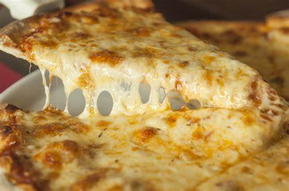
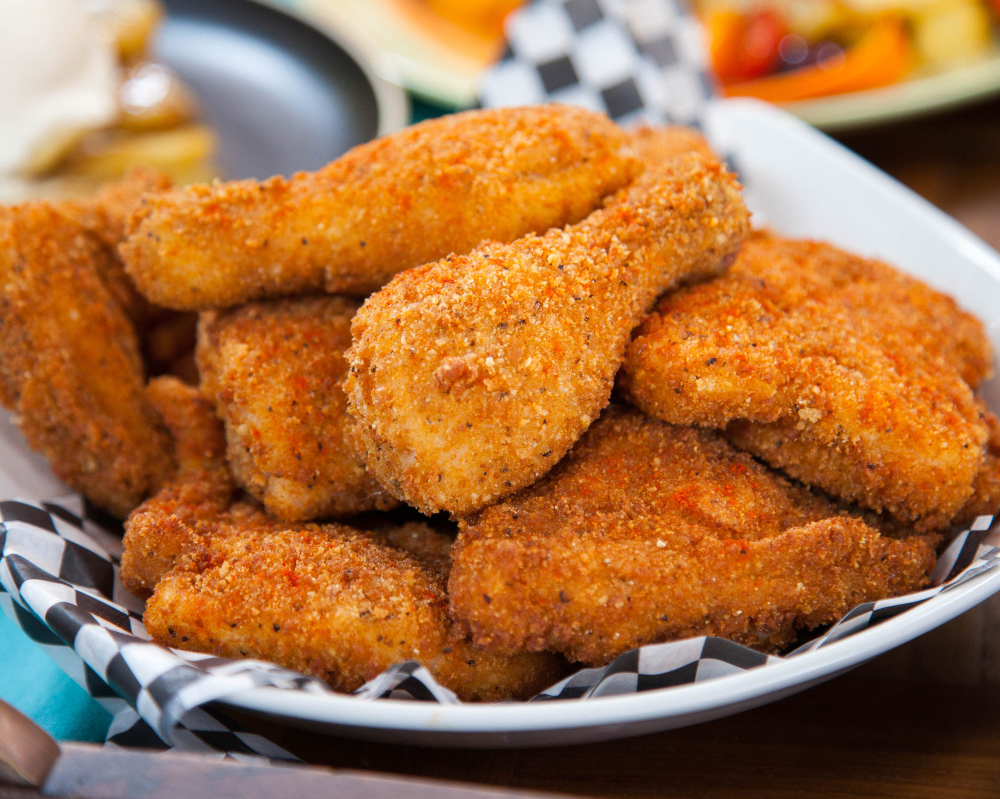
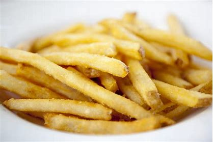
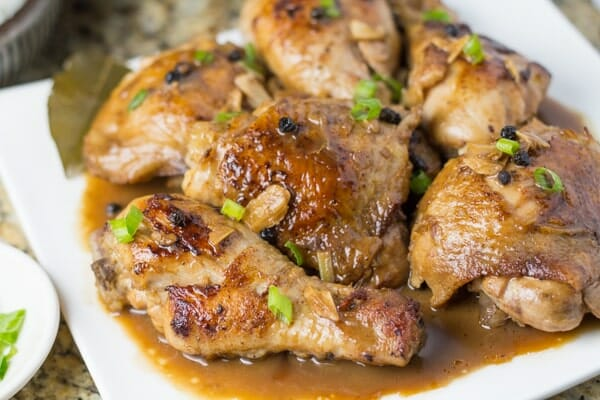
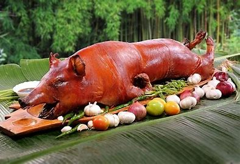
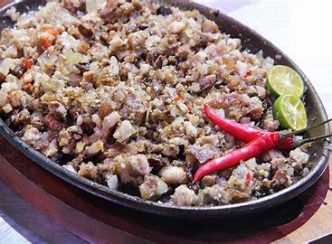
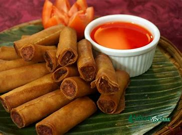
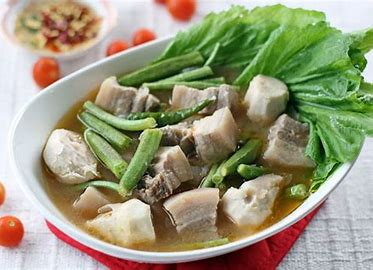

Top 1
 Pizza is a dish of Italian origin consisting of a flat, round base of dough baked with a topping of tomato sauce and cheese, typically with added meat or vegetables.
Top 2

Ice Cream is a sweetened frozen food typically eaten as a snack or dessert.
Top 3
 Fried Chicken has been described as being "crunchy" and "juicy", as well as "crispy".
Top 4

Hamburger is a round patty of ground beef, fried or grilled and typically served on a bun or roll and garnished with various condiments.
Top 5
 French fries is a french-fried potatoes, or simply fries, are batonnet or allumette -cut deep-fried potatoes, originating from either Belgium or France.
Top 6
 Adobo refers to a method of marinating and stewing for any cut of meat or fish in a briny mixture of vinegar, soy sauce, and spices.
Top 7
 Lechon is a Spanish word referring to a roasted baby pig (piglet) which was still fed by suckling its mother's milk (a suckling pig ).
Top 8
 Sisig o is a dish made out of roasted and chopped pig’s head, liver and other offal seasoned with calamansi, soy sauce and chili peppers.
Top 9
 Lumpia is a traditional Filipino dish. It is the Filipino version of the egg rolls. It can be served as a side dish or as an appetizer.
Top 10
 Sinigang is a Filipino soup or stew characterized by its sour and savoury taste. It is most often associated with tamarind, although it can use other sour fruits and leaves as the souring agent.